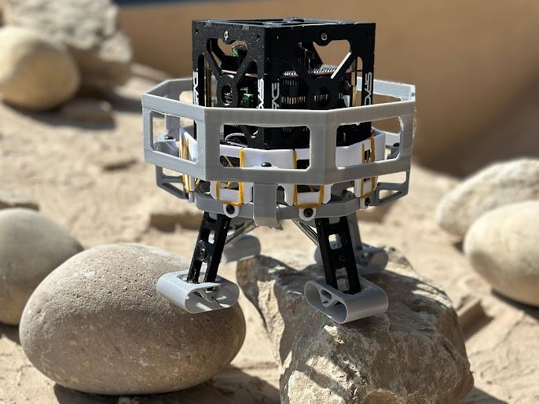
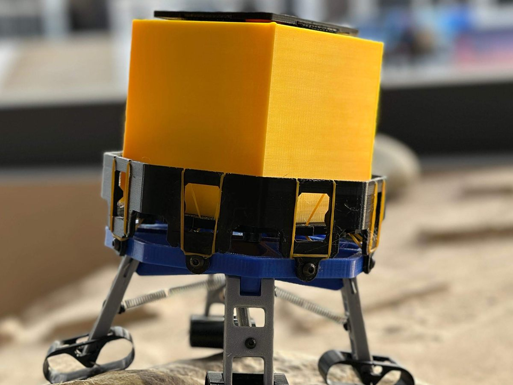

PlanetX CubeSat Lander
- Payload
- 1U CubeSat, 500 g
- Material
- PETG
- Printed mass
- 350 g
- Result
- 2nd place
A passive, 3D-printed lander that protects a 1U, 500 g CubeSat from drop impacts using extension springs, legs and a roll cage, with no electronics. We built it for the PlanetX Lander Challenge at Dubai Airshow 2025 (UAE Space Agency), where it took 2nd place.
A team of four. I did all of the CAD, the rapid prototyping and the design for additive manufacturing (DfAM). The challenge was to design, fabricate and test a CubeSat lander that survives a 2 m Earth-gravity drop test.
The lander


Interactive model
Loading 3D model…
Drag to rotate, scroll or pinch to zoom, right-drag or two fingers to pan. This is the CAD model of the final version, with a dummy cube in place of the CubeSat. About 67,000 triangles, 3.4 MB.
Three iterations
Each version was drawn in SolidWorks, printed, assembled and drop-tested, and the failures set the next version.
| Version | Design | Outcome |
|---|---|---|
| V1 | Piston-style compression system with extension springs. | Absorbed energy in several directions and reduced shock. Loose tolerances gave chaotic rebound, the small feet were unstable, lateral stabilisation was poor and the structure had weak points. Too complex mechanically. |
| V2 | Piston removed, extension springs only. Shorter legs for a lower centre of gravity, larger hinged feet to adapt to terrain, and a roll-cage-style shock cage for lateral damping. | Lower bounce, smoother energy absorption and better landing stability. The foot hinges were weak, the springs overstretched and the frame still deformed in some drops. |
| Final | Stiffer extension springs, reinforced higher-friction feet, a thicker and more rigid frame, and an extra roll cage so the CubeSat never touches the ground. | No tipping and a consistent, controlled landing. |
Rapid prototyping and DfAM
Everything structural was printed in-house, so each failed drop fed straight into a redesign and a new print. New parts were printed for each test.
| Item | Choice |
|---|---|
| Printer and material | Elegoo Neptune 4 Max, PETG |
| Infill and walls | 15% infill, 4 perimeters |
| Printed parts | 350 g: inner and outer cages, leg frame, legs and reinforced feet |
| Other parts | 40 g: M4 and M3 bolts, springs and rubber bands |
| Print time | 13.5 hours in total |
Testing and results
- Test campaign: more than 20 drop tests, each with new printed parts.
- Up to 2 m, onto a ceramic floor: no structural failure, the CubeSat stayed undamaged, the lander landed upright and settled quickly with minimal rebound.
- Beyond 2 m: drops went as high as 6 m. Performance was best within 2.5 m.
Next steps we listed: composite materials, variable-stiffness dampers and adaptive foot geometry.